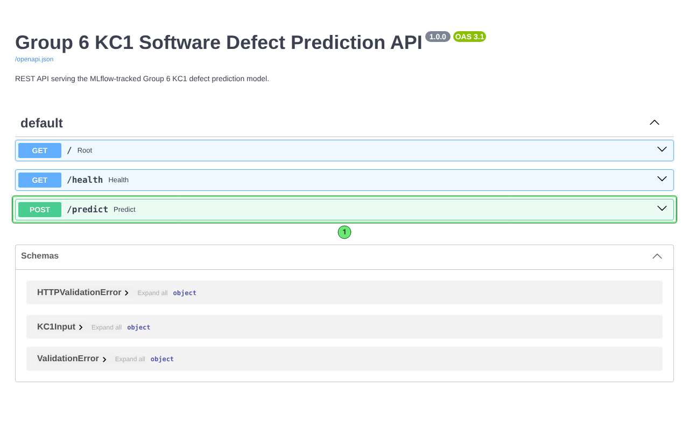
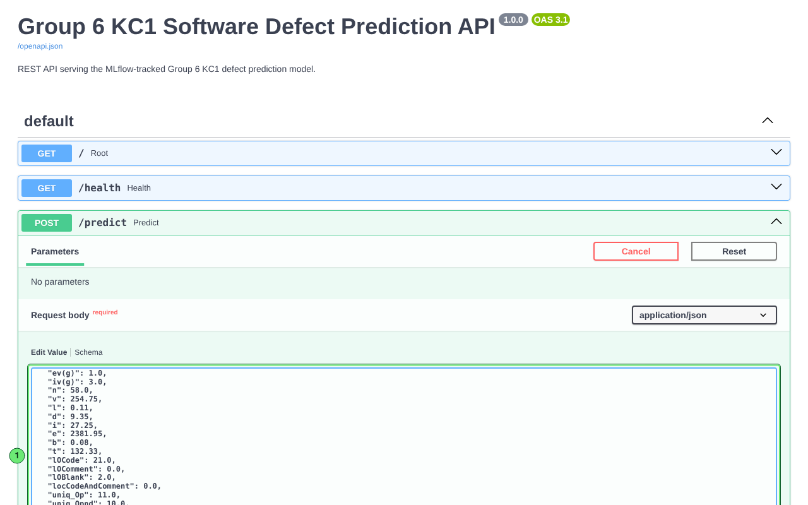
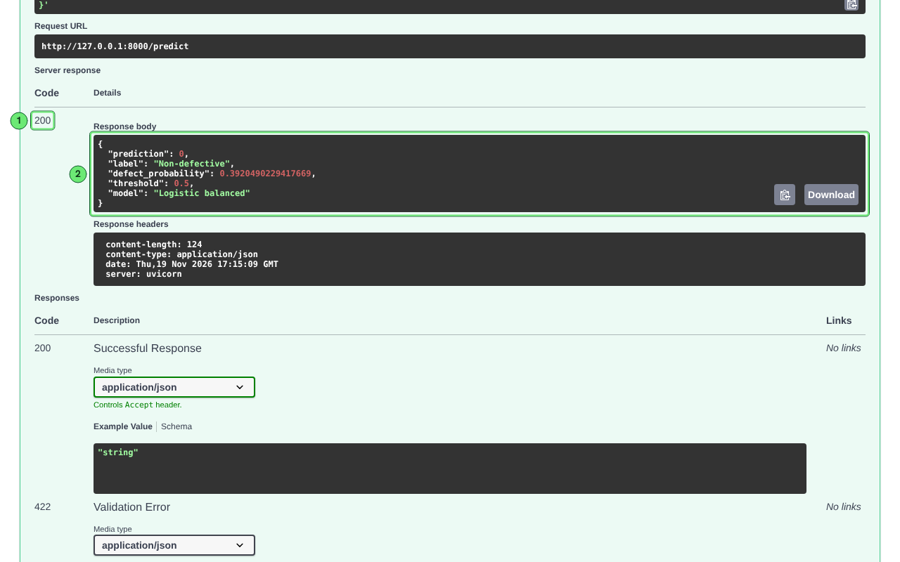

Get Your First Prediction from the KC1 API
Train the KC1 model, start the prediction API, and send it the metrics of one software module.
Before You Begin
- Docker with Compose version 2. Check with
docker compose version. - A copy of the project:
git clone https://github.com/domail2karandeshmukh-cyber/group6-kc1-defect-prediction.git, thencd group6-kc1-defect-prediction. - Internet access for the first training run, which downloads the KC1 data set.
Procedure
Results
The API answers with one prediction.
{"prediction": 0, "label": "Non-defective", "defect_probability": 0.3920490229417669, "threshold": 0.5, "model": "Logistic balanced"}These outputs are real. On 19 November 2026, the project’s trainer produced the output in step 2. FastAPI’s test client recorded the answers in steps 4 and 6 by calling the API in the same process. The Docker commands come from the project’s README, and that check didn’t include them.
What to Do Next
- Read the KC1 prediction API reference for every field and every error.
- If a request fails, see Troubleshoot the KC1 API.
Try It from the API’s Own Page
The API serves an interactive page at http://127.0.0.1:8000/docs, made by Swagger UI from the API’s OpenAPI description.
- Open
http://127.0.0.1:8000/docs, and select POST /predict.
- Select Try it out, and paste the contents of
module.jsoninto the request body.
- Select Execute. The page shows the status code,
200, and the same response as step 6.